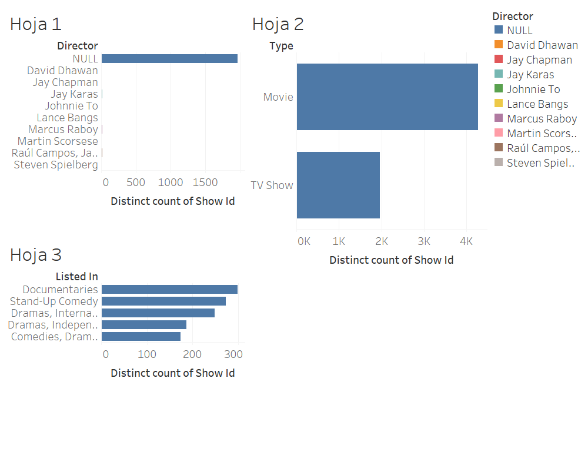

Visualización Principal

Este dashboard presenta un análisis detallado de las películas y series más vistas, clasificadas por géneros, directores y formatos.
Explora las estadísticas visualizadas con Tableau
Este dashboard presenta un análisis detallado de las películas y series más vistas, clasificadas por géneros, directores y formatos.